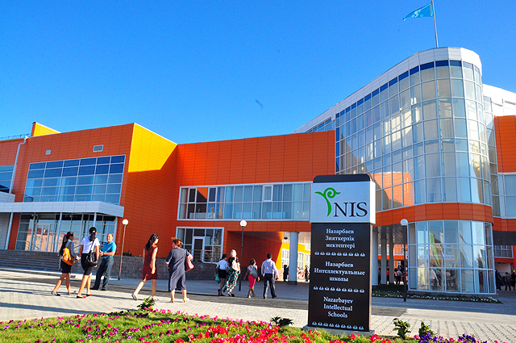

 Accelerated socio-economic development of Kazakhstan in the early 21st century has caused an urgent need for professionals with a high level of technical, managerial and leadership competencies, so in 2008 year at the initiative of the First President of the Republic of Kazakhstan, Leader of the Nation Nursultan Nazarbayev, a project of creation the Intellectual schools had been launched. Intellectual Schools are called to become an experimental platform for the development, monitoring, research, analysis, approbation, introduction and implementation of modern models of educational programs by level: elementary school (including pre-school education and training), primary school and high school. The existing requirements and standards of education in the Republic of Kazakhstan were not allowed to introduce at the appropriate level modern forms of governance in education, to implement innovative educational programs and research projects. In this connection, to introduce the modern forms of governance in education, to develop an academic freedom and autonomy for the implementation of innovative educational programs and research projects, on 19 January 2011, the Law of the Republic of Kazakhstan "On the status of" Nazarbayev University ", "Nazarbayev Intellectual Schools" and "Nazarbayev Fund" was adopted. The given status implies a right to approve own educational curricula, establish requirements for entrance exams, ongoing monitoring of progress, interim and final certification and more. The principle of academic freedom will accelerate the development and approbation of new programs and the modernization of secondary education.